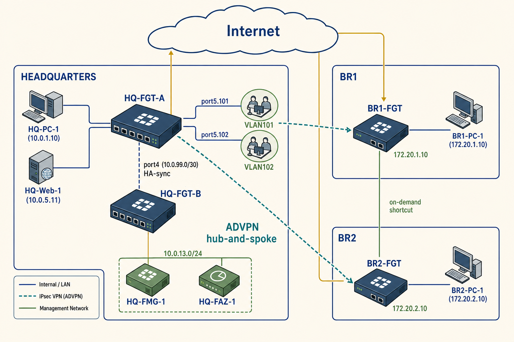

Section 01 · Objectives & Prereqs
What You'll Learn
- The three script scopes — Remote, Device DB, Policy Package / ADOM DB — and when each fits
- How Local Template Packages (LTP) use metadata variables to reuse one template across many devices
- Registering a fresh branch FortiGate on FortiManager and pushing baseline config
| Duration | 60-90 minutes |
| Prereq labs | none |
| Prereq sessions | Session 06, Session 07, Session 08 |
Section 02 · Topology
Devices in This Lab
Subset of the shared pod used in Lab 02. Full topology: labs hub →

| Device | Role | Model | Interface | IP | Zone | Connected to |
|---|---|---|---|---|---|---|
| BR1-FGT | Branch 1 FortiGate — ADVPN spoke, BGP peer | FortiGate-VM 7.6.2 | port1 | 100.65.1.111/24 | WAN | Internet |
| port2 | 172.20.1.254/24 | BR1-LAN | BR1-PC-1 | |||
| BR2-FGT | Branch 2 FortiGate — ADVPN spoke, on-demand shortcut partner | FortiGate-VM 7.6.2 | port1 | 100.65.2.111/24 | WAN | Internet |
| port2 | 172.20.2.254/24 | BR2-LAN | BR2-PC-1 | |||
| HQ-FMG-1 | FortiManager — central management, ADOMs, policy packages, provisioning templates | FortiManager-VM 7.6.2 | port1 | 100.65.0.120/24 | MGMT | Internet |
| port2 | 10.0.13.254/24 | HQ-MGMT | HQ-LAN switch |
Section 03 · Steps
Predict → Run → Verify → Reflect
Step 01Run a Remote CLI script (ACME Certificate) against HQ-DCFW
Think first
The script's target is 'Remote FortiGate Directly (via CLI).' Before running it, predict: does the certificate land on HQ-DCFW's live config, on the FortiManager device database, or both? What will the sync status between them look like afterwards?Run
# On FortiManager GUI (admin / Fortinet1!):
# 1. Select 'EFW' ADOM
# 2. Device Manager > Scripts
# 3. Check the 'ACME Certificate' script (Type: CLI, Target: Remote FortiGate Directly via CLI)
# 4. Click 'Run Script'
# 5. Move HQ-DCFW from Available Entries to Selected Entries
# 6. Click 'Run Now' → OK → CloseVerify
Device Manager > Device & Groups > Managed FortiGate > HQ-DCFW > Dashboard > Summary > Configuration and Installation widget > Revision > Total Revision > Revision History iconExpected output
A new revision row created by 'script_manager' with Installation = 'Retrieved'.
Reflect
The lab guide warns: 'You should avoid using the remote method to modify, delete, or create objects that are used in firewall policies.' Why? What breaks in FortiManager's model if a firewall object lives on the device but not in the ADOM policy package?Step 02Verify the certificate is visible in the FortiManager device database
Think first
The Remote script bypassed FortiManager — so how did the ACME certificate become visible under HQ-DCFW > System > Certificates *inside FortiManager*? What automatic step did FortiManager perform right after the script ran?Run
# 1. HQ-DCFW > Feature Visibility > enable 'Certificates' > OK
# 2. HQ-DCFW > System > Certificates
# 3. Scroll to Local Certificates and locate 'acmetest'Verify
Local Certificates list on HQ-DCFWExpected output
acmetest certificate present in Local Certificates.
Reflect
After the retrieve, HQ-DCFW shows Config Status 'Synchronized' and Policy Package Status 'DCFW' — both green. What would 'Modified' or 'Out of Sync' have meant here instead?Step 03Run a Device Database script (Static Route) against HQ-DCFW
Think first
This script's target is 'Device Database' (not the remote FortiGate). Predict: after you run it, will HQ-DCFW's live routing table show the new route immediately? Where will the change actually land?Run
# 1. Device Manager > Scripts
# 2. Check the 'Static Route' script (Type: CLI, Target: Device Database)
# 3. Click 'Run Script'
# 4. Move HQ-DCFW to Selected Entries > Run Now → OK → Close
# 5. Device Manager > Device & Groups > Managed FortiGateVerify
Managed FortiGate list — check HQ-DCFW's Config Status columnExpected output
HQ-DCFW shows 'Modified' with an orange warning triangle.
Reflect
Contrast with Step 1: the Remote script left HQ-DCFW 'Synchronized' immediately; this script left it 'Modified'. What does that difference tell you about *what the two script scopes actually do* and *who owns the change until you install it*?Step 04Install the Device DB change to HQ-DCFW
Think first
You only changed the device layer (a static route). But the Install Wizard offers 'Install Policy Package & Device Settings.' Predict: why does the lab guide recommend installing the policy package too, even when your change was device-layer only?Run
# 1. Managed FortiGate > select HQ-DCFW checkbox
# 2. Install > Install Wizard
# 3. 'Install Policy Package & Device Settings' → Policy Package: DCFW
# 4. Next → Next → Install preview → Close → Install → FinishVerify
Managed FortiGate — HQ-DCFW rowExpected output
Config Status 'Synchronized' and Policy Package Status 'DCFW' — both green.
Reflect
If the install preview showed 'No commands to be installed' or 'No preview' — what would that be telling you, and would it be a problem?Step 05Run a Policy Package script (Firewall rule) against the DCFW policy package
Think first
First open Policy & Objects > Policy Packages > DCFW > Firewall Policy and count what's there. Predict: after the 'Firewall rule' script runs, where will the new policy appear — on HQ-DCFW's live config, in the DCFW policy package, or both?Run
# 1. Policy & Objects > Policy Packages > DCFW > Firewall Policy
# (should see 1 policy: 'Internet')
# 2. Device Manager > Scripts
# 3. Check 'Firewall rule' (Type: CLI, Target: Policy Package or ADOM Database)
# 4. Run Script → Run script on policy package: DCFW → Run Now → OK → Close
# 5. Return to Policy & Objects > Policy Packages > DCFW > Firewall PolicyVerify
Count firewall policies in the DCFW packageExpected output
2 policies now: 'Internet' and 'To HQ-Web-1'.
Reflect
If your script only needed to create firewall addresses or service objects (not tied to any specific policy), what policy package should you target — and why does it not actually matter?Step 06Re-install the policy package to push the new firewall rule to HQ-DCFW
Think first
The Install Wizard has two modes now: 'Install Wizard' and 'Re-install Policy.' Predict: what's the difference — when do you use each — and which preview will show 'copy only' vs actual command diffs?Run
# 1. Policy & Objects > Policy Packages > Install Wizard dropdown > 'Re-install Policy'
# 2. OK to confirm
# 3. Install Preview (see what will push to HQ-DCFW) → Close
# 4. Next → FinishVerify
Managed FortiGate — HQ-DCFW rowExpected output
Config Status 'Synchronized' and Policy Package Status 'DCFW' — both green.
Reflect
Summarise the three script scopes in one sentence each — Remote / Device DB / Policy-Package — capturing (a) where the change lands and (b) what install action, if any, you must run next.Step 07Create the IP_port2 metadata variable in the EFW ADOM
Think first
The lab has 6 metadata variables in total; five are pre-created and you're adding IP_port2. What does 'metadata variable' actually mean here — and how is it different from just typing an IP directly into a CLI template you'd apply to one device?Run
# 1. FortiManager GUI (admin / Fortinet1!) > select 'EFW' ADOM
# 2. Policy & Objects > Advanced > Metadata Variables > Create New
# 3. Configure:
# Name = IP_port2
# Description = (blank)
# Default Value = (blank)
# 4. OKVerify
Policy & Objects > Advanced > Metadata VariablesExpected output
IP_port2 present in the list alongside GW, Hostname, IP_port1, IP_port4, LAN_BR (and vm_interface_number).
Reflect
Default Value is left blank on purpose. What behaviour does that produce at install time on a device where you haven't yet bound a per-device mapping — and why is that the safer default here?Step 08Reference $(IP_port2) inside the port2 stanza of the Pre-CLI Template
Think first
Syntax is `$(varname)` — a dollar sign then parentheses. Predict what happens at install time if you type `$IP_port2` without parentheses. What about `(IP_port2)` without the dollar sign?Run
# 1. Device Manager > Provisioning Templates > CLI
# 2. Expand 'Pre-Run CLI Template' > right-click 'Pre-CLI Template' > Edit
# 3. In Script Details, in the port2 section, on the 'set ip' line, type $
# 4. From the list that appears, select (IP_port2)
# 5. Confirm the line now reads: set ip $(IP_port2)
# 6. Click OKVerify
Reopen the Pre-CLI Template → port2 stanzaExpected output
Line 4 shows: set ip $(IP_port2)
Reflect
The lab guide explicitly warns: 'The dollar sign ($) must precede any metadata variable (enclosed in parentheses). Otherwise, you will receive an error.' Why do you think FortiManager insists on both — what would ambiguously typed values collide with in a normal FortiGate CLI?Step 09Add BR2-FGT-1 as a model device and bind per-device metadata mappings
Think first
You're adding a device that isn't powered on yet — a 'model device'. When the real BR2-FGT-1 boots up and dials home for the first time, how does FortiManager decide it's THIS pre-registered entry (BR2-FGT-1) and not some other unregistered FortiGate?Run
# 1. Device Manager > Device & Groups > Add Device > Add Model Device
# 2. Configure:
# Name = BR2-FGT-1
# Link Device By = Pre-shared Key
# Pre-shared Key = 123456789
# Device Model = FortiGate-VM64-KVM
# Port Provisioning = 4
# Pre-Run CLI Template = Pre-CLI Template
# Assign Policy Package = BR
# 3. Click 'Edit Variable Mapping' and enter:
# $(GW) = 100.65.2.254
# $(Hostname) = BR2-FGT-1
# $(IP_port1) = 192.168.1.112/16
# $(IP_port2) = 100.65.2.112/24
# $(IP_port4) = 172.20.2.254/24
# $(LAN_BR) = 172.20.2.0/24
# 4. OK → Next → FinishVerify
Device Manager > Device & Groups > Managed FortiGate listExpected output
BR2-FGT-1 present, Config Status = 'Unknown', Policy Package Status = 'BR' (orange warning).
Reflect
The 'Unknown' Config Status is the physical device hasn't connected yet. The orange 'BR' policy-package status is saying something needs to happen. What has to happen next before this device can go green?Step 10Install the policy package + device settings to BR2-FGT-1 (still offline)
Think first
BR2-FGT-1 isn't reachable yet — the physical device isn't powered on and can't talk to FortiManager. Predict: what does 'Install' actually do at this stage? Where does the resolved config go if it can't be pushed to the device?Run
# 1. Managed FortiGate > select BR2-FGT-1 checkbox
# 2. Install > Install Wizard
# 3. 'Install Policy Package & Device Settings' → Policy Package: BR
# 4. Next → Next → Install → Finish
# Verify the device database now shows:
# - Network > Interfaces: port1=192.168.1.112/16, port2=100.65.2.112/24, port4=172.20.2.254/24
# - Network > Static Routes: 0.0.0.0/0 via 100.65.2.254 on port2
# - CLI Configurations > firewall > policy: no firewall policy yetVerify
Device Manager > Provisioning Templates > CLI > Pre-Run CLI TemplateExpected output
'Assigned to Device/Group' column shows '0 Devices in Total' — the pre-run template auto-detached after install.
Reflect
Regular CLI templates stick to a device until you remove them. Pre-run CLI templates detach automatically after one install. Why the different lifecycle — what's the pre-run template's purpose that makes 'apply once, forget' the right behaviour?Step 11Bootstrap BR2-FGT-1 from the serial console and register it against FortiManager
Think first
You've prepared everything in FortiManager, but the physical BR2-FGT-1 boots up with a blank config. What is the *absolute minimum* you must configure on the console before FortiManager can push everything else?Run
# On BR2-FGT-1 serial console (admin / Fortinet1!):
config system interface
edit "port2"
set ip 100.65.2.112 255.255.255.0
set allowaccess ping https ssh fgfm
end
config router static
edit 1
set device port2
set gateway 100.65.2.254
end
config system central-management
set type fortimanager
set fmg 100.65.0.120
end
# Prompt: 'FortiGate can establish a connection to obtain the serial number now. (y/n)'
# Type: y
# Prompt: 'Obtained serial number ... Do you confirm ... (y/n)'
# Type: y
# Now register with the FortiManager serial number + pre-shared key:
execute central-mgmt register-device FMG-VMTM24012945 123456789Verify
On FortiManager: System Settings > Task Monitor (in ADOM EFW)Expected output
Two tasks running: 'Autolinking Device' progresses to 100%, then 'Push config to device' completes.
Reflect
On the console prompt, the FortiGate hostname changes from `FortiGate-VM64-KVM #` to `BR2-FGT-1 #` after registration. What does that hostname flip tell you about which side actually 'won' the config negotiation — and what would it have looked like if the pre-shared key had been wrong?Step 12Repeat the flow for BR3-FGT-1 (expert challenge — different pre-shared key + metadata)
Think first
You've done this once. Before repeating for BR3, list which of these you can reuse as-is: the metadata variables themselves, the Pre-CLI Template, the BR policy package, the provisioning approach. What has to change per device?Run
# 1. Add Model Device (BR3-FGT-1) with:
# Pre-shared Key = 987654321 (different from BR2)
# Device Model = FortiGate-VM64-KVM
# Port Provisioning = 4
# Pre-Run CLI Template = Pre-CLI Template
# Assign Policy Package = BR
# Metadata mappings:
# $(GW) = 100.65.3.254
# $(Hostname) = BR3-FGT-1
# $(IP_port1) = 192.168.1.113/16
# $(IP_port2) = 100.65.3.113/24
# $(IP_port4) = 172.20.3.254/24
# $(LAN_BR) = 172.20.3.0/24
# 2. Install Wizard → Policy Package: BR → Next → Install → Finish
# 3. On BR3-FGT-1 serial console, bootstrap identical to Step 11 but with 100.65.3.x IPs:
config system interface
edit "port2"
set ip 100.65.3.113 255.255.255.0
set allowaccess ping https ssh fgfm
end
config router static
edit 1
set device port2
set gateway 100.65.3.254
end
config system central-management
set type fortimanager
set fmg 100.65.0.120
end
# y, y to obtain + confirm the FMG serial
execute central-mgmt register-device FMG-VMTM24012945 987654321Verify
FortiManager > Managed FortiGate listExpected output
Both BR2-FGT-1 and BR3-FGT-1 show Config Status 'Synchronized' (or 'Auto-update'); both bound to policy package 'BR'.
Reflect
You just deployed two branches with completely different IPs, hostnames, and LAN subnets using ONE Pre-CLI template. Give a one-sentence pitch for LTP + metadata variables to a manager who's pushing back on the up-front setup time. Now flip it: what does this workflow trade *away* compared to configuring each FortiGate directly?Section 04 · Verification
You're Done When
- A Remote CLI script, a Device DB script, and a Policy Package script have each been run successfully against HQ-DCFW (three revisions in the history)
- BR2-FGT-1 and BR3-FGT-1 both appear in Managed FortiGate with Config Status Synchronized or Auto-update and policy package BR
- The metadata variable $(IP_port2) resolves to different values (100.65.2.112/24 and 100.65.3.113/24) when the pre-CLI template installs on each device
- Both branch consoles show the hostname flipping from `FortiGate-VM64-KVM #` to their assigned $(Hostname) after `execute central-mgmt register-device` completes
Section 05 · Cleanup
Before the Next Lab
Cleanup
Keep the managed-device registrations — Labs 5, 7, 8, and 9 all depend on FortiManager. Delete any throwaway scripts you created while exploring. Leave the Pre-CLI Template as-is (it will auto-detach from BR2/BR3 after install; that's expected).